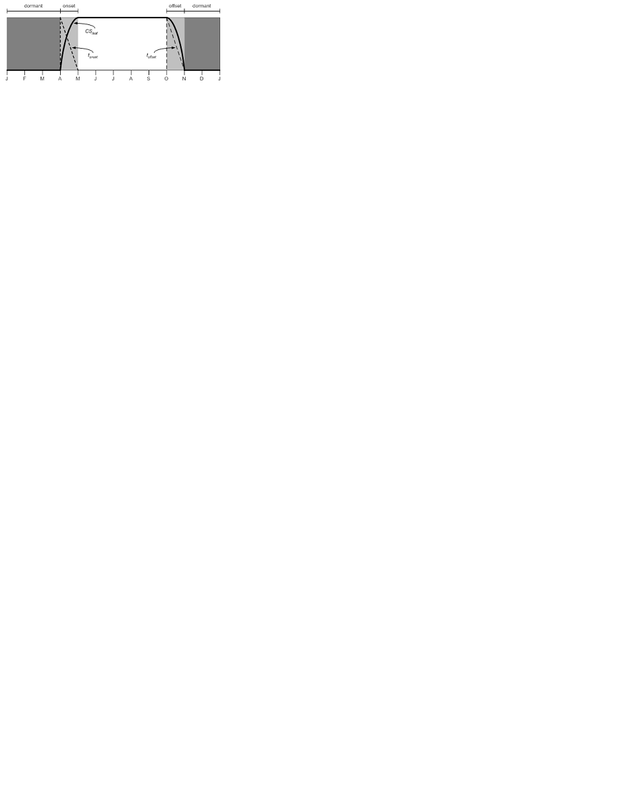

4. Radiative Fluxes¶
The net radiation at the surface is \left(\vec{S}_{v} +\vec{S}_{g} \right)-\left(\vec{L}_{v} +\vec{L}_{g} \right), where \vec{S} is the net solar flux absorbed by the vegetation (“v”) and the ground (“g”) and \vec{L} is the net longwave flux (positive toward the atmosphere) (W m-2).
4.1. Solar Fluxes¶
Figure 4.1 illustrates the direct beam and diffuse fluxes in the canopy. I\, \uparrow _{\Lambda }^{\mu } and I\, \uparrow _{\Lambda } are the upward diffuse fluxes, per unit incident direct beam and diffuse flux (section 3.1). I\, \downarrow _{\Lambda }^{\mu } and I\, \downarrow _{\Lambda } are the downward diffuse fluxes below the vegetation per unit incident direct beam and diffuse radiation (section 3.1). The direct beam flux transmitted through the canopy, per unit incident flux, is e^{-K\left(L+S\right)} . \vec{I}_{\Lambda }^{\mu } and \vec{I}_{\Lambda }^{} are the fluxes absorbed by the vegetation, per unit incident direct beam and diffuse radiation (section 3.1). \alpha _{g,\, \Lambda }^{\mu } and \alpha _{g,\, \Lambda } are the direct beam and diffuse ground albedos (section 3.2). L and S are the exposed leaf area index and stem area index (section 2.1.4). K is the optical depth of direct beam per unit leaf and stem area (section 3.1).
Figure 4.1. Schematic diagram of (a) direct beam radiation, (b) diffuse solar radiation, and (c) longwave radiation absorbed, transmitted, and reflected by vegetation and ground.
For clarity, terms involving T^{n+1} -T^{n} are not shown in (c).
The total solar radiation absorbed by the vegetation and ground is
(1)¶\vec{S}_{v} =\sum _{\Lambda }S_{atm} \, \downarrow _{\Lambda }^{\mu } \overrightarrow{I}_{\Lambda }^{\mu } +S_{atm} \, \downarrow _{\Lambda } \overrightarrow{I}_{\Lambda }
(2)¶\begin{array}{l} {\vec{S}_{g} =\sum _{\Lambda }S_{atm} \, \downarrow _{\Lambda }^{\mu } e^{-K\left(L+S\right)} \left(1-\alpha _{g,\, \Lambda }^{\mu } \right) +} \\ {\qquad \left(S_{atm} \, \downarrow _{\Lambda }^{\mu } I\downarrow _{\Lambda }^{\mu } +S_{atm} \downarrow _{\Lambda } I\downarrow _{\Lambda } \right)\left(1-\alpha _{g,\, \Lambda } \right)} \end{array}
where S_{atm} \, \downarrow _{\Lambda }^{\mu } and S_{atm} \, \downarrow _{\Lambda } are the incident direct beam and diffuse solar fluxes (W m-2). For non-vegetated surfaces, e^{-K\left(L+S\right)} =1, \overrightarrow{I}_{\Lambda }^{\mu } =\overrightarrow{I}_{\Lambda } =0, I\, \downarrow _{\Lambda }^{\mu } =0, and I\, \downarrow _{\Lambda } =1, so that
(3)¶\begin{array}{l} {\vec{S}_{g} =\sum _{\Lambda }S_{atm} \, \downarrow _{\Lambda }^{\mu } \left(1-\alpha _{g,\, \Lambda }^{\mu } \right) +S_{atm} \, \downarrow _{\Lambda } \left(1-\alpha _{g,\, \Lambda } \right)} \\ {\vec{S}_{v} =0} \end{array}.
Solar radiation is conserved as
(4)¶\sum _{\Lambda }\left(S_{atm} \, \downarrow _{\Lambda }^{\mu } +S_{atm} \, \downarrow _{\Lambda } \right)=\left(\vec{S}_{v} +\vec{S}_{g} \right) +\sum _{\Lambda }\left(S_{atm} \, \downarrow _{\Lambda }^{\mu } I\uparrow _{\Lambda }^{\mu } +S_{atm} \, \downarrow _{\Lambda } I\uparrow _{\Lambda } \right)
where the latter term in parentheses is reflected solar radiation.
Photosynthesis and transpiration depend non-linearly on solar radiation, via the light response of stomata. The canopy is treated as two leaves (sunlit and shaded) and the solar radiation in the visible waveband (< 0.7 µm) absorbed by the vegetation is apportioned to the sunlit and shaded leaves (section 3.1). The absorbed photosynthetically active (visible waveband) radiation averaged over the sunlit canopy (per unit plant area) is
(5)¶\phi ^{sun} ={\left(\vec{I}_{sun,vis}^{\mu } S_{atm} \downarrow _{vis}^{\mu } +\vec{I}_{sun,vis}^{} S_{atm} \downarrow _{vis}^{} \right)\mathord{\left/ {\vphantom {\left(\vec{I}_{sun,vis}^{\mu } S_{atm} \downarrow _{vis}^{\mu } +\vec{I}_{sun,vis}^{} S_{atm} \downarrow _{vis}^{} \right) L^{sun} }} \right. \kern-\nulldelimiterspace} L^{sun} }
and the absorbed radiation for the average shaded leaf (per unit plant area) is
(6)¶\phi ^{sha} ={\left(\vec{I}_{sha,vis}^{\mu } S_{atm} \downarrow _{vis}^{\mu } +\vec{I}_{sha,vis}^{} S_{atm} \downarrow _{vis}^{} \right)\mathord{\left/ {\vphantom {\left(\vec{I}_{sha,vis}^{\mu } S_{atm} \downarrow _{vis}^{\mu } +\vec{I}_{sha,vis}^{} S_{atm} \downarrow _{vis}^{} \right) L^{sha} }} \right. \kern-\nulldelimiterspace} L^{sha} }
with L^{sun} and L^{sha} the sunlit and shaded plant area index, respectively. The sunlit plant area index is
(7)¶L^{sun} =\frac{1-e^{-K(L+S)} }{K}
and the shaded leaf area index is L^{sha} =(L+S)-L^{sun} . In calculating L^{sun} ,
(8)¶K=\frac{G\left(\mu \right)}{\mu }
where G\left(\mu \right) and \mu are parameters in the two-stream approximation (section 3.1).
The model uses the two-stream approximation to calculate radiative transfer of direct and diffuse radiation through a canopy that is differentiated into leaves that are sunlit and those that are shaded (section 3.1). The two-stream equations are integrated over all plant area (leaf and stem area) in the canopy. The model has an optional (though not supported) multi-layer canopy, as described by Bonan et al. (2012). The multi-layer model is only intended to address the non-linearity of light profiles, photosynthesis, and stomatal conductance in the plant canopy.
In the multi-layer canopy, canopy-integrated radiative fluxes are calculated from the two-stream approximation. The model additionally derives the light profile with depth in the canopy by taking the derivatives of the absorbed radiative fluxes with respect to plant area index (L'=L+S) and evaluating them incrementally through the canopy with cumulative plant area index (x). The terms {d\vec{I}_{sun,\Lambda }^{\mu } (x)\mathord{\left/ {\vphantom {d\vec{I}_{sun,\Lambda }^{\mu } (x) dL'}} \right. \kern-\nulldelimiterspace} dL'} and {d\vec{I}_{sun,\Lambda }^{} (x)\mathord{\left/ {\vphantom {d\vec{I}_{sun,\Lambda }^{} (x) dL'}} \right. \kern-\nulldelimiterspace} dL'} are the direct beam and diffuse solar radiation, respectively, absorbed by the sunlit fraction of the canopy (per unit plant area) at a depth defined by the cumulative plant area index x; {d\vec{I}_{sha,\Lambda }^{\mu } (x)\mathord{\left/ {\vphantom {d\vec{I}_{sha,\Lambda }^{\mu } (x) dL'}} \right. \kern-\nulldelimiterspace} dL'} and {d\vec{I}_{sha,\Lambda }^{} (x)\mathord{\left/ {\vphantom {d\vec{I}_{sha,\Lambda }^{} (x) dL'}} \right. \kern-\nulldelimiterspace} dL'} are the corresponding fluxes for the shaded fraction of the canopy at depth x. These fluxes are normalized by the sunlit or shaded fraction at depth x, defined by f_{sun} =\exp \left(-Kx\right), to give fluxes per unit sunlit or shaded plant area at depth x.
4.2. Longwave Fluxes¶
The net longwave radiation (W m-2) (positive toward the atmosphere) at the surface is
(9)¶\vec{L}=L\, \uparrow -L_{atm} \, \downarrow
where L\, \uparrow is the upward longwave radiation from the surface and L_{atm} \, \downarrow is the downward atmospheric longwave radiation (W m-2). The radiative temperature T_{rad} (K) is defined from the upward longwave radiation as
(10)¶T_{rad} =\left(\frac{L\, \uparrow }{\sigma } \right)^{{1\mathord{\left/ {\vphantom {1 4}} \right. \kern-\nulldelimiterspace} 4} }
where \sigma is the Stefan-Boltzmann constant (Wm-2 K-4) (Table 2.6). With reference to Figure 4.1, the upward longwave radiation from the surface to the atmosphere is
(11)¶\begin{array}{l} {L\, \uparrow =\delta _{veg} L_{vg} \, \uparrow +\left(1-\delta _{veg} \right)\left(1-\varepsilon _{g} \right)L_{atm} \, \downarrow +} \\ {\qquad \left(1-\delta _{veg} \right)\varepsilon _{g} \sigma \left(T_{g}^{n} \right)^{4} +4\varepsilon _{g} \sigma \left(T_{g}^{n} \right)^{3} \left(T_{g}^{n+1} -T_{g}^{n} \right)} \end{array}
where L_{vg} \, \uparrow is the upward longwave radiation from the vegetation/soil system for exposed leaf and stem area L+S\ge 0.05, \delta _{veg} is a step function and is zero for L+S<0.05 and one otherwise, \varepsilon _{g} is the ground emissivity, and T_{g}^{n+1} and T_{g}^{n} are the snow/soil surface temperatures at the current and previous time steps, respectively (Chapter 6).
For non-vegetated surfaces, the above equation reduces to
(12)¶L\, \uparrow =\left(1-\varepsilon _{g} \right)L_{atm} \, \downarrow +\varepsilon _{g} \sigma \left(T_{g}^{n} \right)^{4} +4\varepsilon _{g} \sigma \left(T_{g}^{n} \right)^{3} \left(T_{g}^{n+1} -T_{g}^{n} \right)
where the first term is the atmospheric longwave radiation reflected by the ground, the second term is the longwave radiation emitted by the ground, and the last term is the increase (decrease) in longwave radiation emitted by the ground due to an increase (decrease) in ground temperature.
For vegetated surfaces, the upward longwave radiation from the surface reduces to
(13)¶L\, \uparrow =L_{vg} \, \uparrow +4\varepsilon _{g} \sigma \left(T_{g}^{n} \right)^{3} \left(T_{g}^{n+1} -T_{g}^{n} \right)
where
(14)¶\begin{array}{l} {L_{vg} \, \uparrow =\left(1-\varepsilon _{g} \right)\left(1-\varepsilon _{v} \right)\left(1-\varepsilon _{v} \right)L_{atm} \, \downarrow } \\ {\qquad \qquad +\varepsilon _{v} \left[1+\left(1-\varepsilon _{g} \right)\left(1-\varepsilon _{v} \right)\right]\sigma \left(T_{v}^{n} \right)^{3} \left[T_{v}^{n} +4\left(T_{v}^{n+1} -T_{v}^{n} \right)\right]} \\ {\qquad \qquad +\varepsilon _{g} \left(1-\varepsilon _{v} \right)\sigma \left(T_{g}^{n} \right)^{4} } \\ {\qquad =\left(1-\varepsilon _{g} \right)\left(1-\varepsilon _{v} \right)\left(1-\varepsilon _{v} \right)L_{atm} \, \downarrow } \\ {\qquad \qquad +\varepsilon _{v} \sigma \left(T_{v}^{n} \right)^{4} } \\ {\qquad \qquad +\varepsilon _{v} \left(1-\varepsilon _{g} \right)\left(1-\varepsilon _{v} \right)\sigma \left(T_{v}^{n} \right)^{4} } \\ {\qquad \qquad +4\varepsilon _{v} \sigma \left(T_{v}^{n} \right)^{3} \left(T_{v}^{n+1} -T_{v}^{n} \right)} \\ {\qquad \qquad +4\varepsilon _{v} \left(1-\varepsilon _{g} \right)\left(1-\varepsilon _{v} \right)\sigma \left(T_{v}^{n} \right)^{3} \left(T_{v}^{n+1} -T_{v}^{n} \right)} \\ {\qquad \qquad +\varepsilon _{g} \left(1-\varepsilon _{v} \right)\sigma \left(T_{g}^{n} \right)^{4} } \end{array}
where \varepsilon _{v} is the vegetation emissivity and T_{v}^{n+1} and T_{v}^{n} are the vegetation temperatures at the current and previous time steps, respectively (Chapter 5). The first term in the equation above is the atmospheric longwave radiation that is transmitted through the canopy, reflected by the ground, and transmitted through the canopy to the atmosphere. The second term is the longwave radiation emitted by the canopy directly to the atmosphere. The third term is the longwave radiation emitted downward from the canopy, reflected by the ground, and transmitted through the canopy to the atmosphere. The fourth term is the increase (decrease) in longwave radiation due to an increase (decrease) in canopy temperature that is emitted by the canopy directly to the atmosphere. The fifth term is the increase (decrease) in longwave radiation due to an increase (decrease) in canopy temperature that is emitted downward from the canopy, reflected from the ground, and transmitted through the canopy to the atmosphere. The last term is the longwave radiation emitted by the ground and transmitted through the canopy to the atmosphere.
The upward longwave radiation from the ground is
(15)¶L_{g} \, \uparrow =\left(1-\varepsilon _{g} \right)L_{v} \, \downarrow +\varepsilon _{g} \sigma \left(T_{g}^{n} \right)^{4}
where L_{v} \, \downarrow is the downward longwave radiation below the vegetation
(16)¶L_{v} \, \downarrow =\left(1-\varepsilon _{v} \right)L_{atm} \, \downarrow +\varepsilon _{v} \sigma \left(T_{v}^{n} \right)^{4} +4\varepsilon _{v} \sigma \left(T_{v}^{n} \right)^{3} \left(T_{v}^{n+1} -T_{v}^{n} \right).
The net longwave radiation flux for the ground is (positive toward the atmosphere)
(17)¶\vec{L}_{g} =\varepsilon _{g} \sigma \left(T_{g}^{n} \right)^{4} -\delta _{veg} \varepsilon _{g} L_{v} \, \downarrow -\left(1-\delta _{veg} \right)\varepsilon _{g} L_{atm} \, \downarrow .
The above expression for \vec{L}_{g} is the net longwave radiation forcing that is used in the soil temperature calculation (Chapter 6). Once updated soil temperatures have been obtained, the term 4\varepsilon _{g} \sigma \left(T_{g}^{n} \right)^{3} \left(T_{g}^{n+1} -T_{g}^{n} \right) is added to \vec{L}_{g} to calculate the ground heat flux (section 5.4)
The net longwave radiation flux for vegetation is (positive toward the atmosphere)
(18)¶\vec{L}_{v} =\left[2-\varepsilon _{v} \left(1-\varepsilon _{g} \right)\right]\varepsilon _{v} \sigma \left(T_{v} \right)^{4} -\varepsilon _{v} \varepsilon _{g} \sigma \left(T_{g}^{n} \right)^{4} -\varepsilon _{v} \left[1+\left(1-\varepsilon _{g} \right)\left(1-\varepsilon _{v} \right)\right]L_{atm} \, \downarrow .
These equations assume that absorptivity equals emissivity. The emissivity of the ground is
(19)¶\varepsilon _{g} =\varepsilon _{soi} \left(1-f_{sno} \right)+\varepsilon _{sno} f_{sno}
where \varepsilon _{soi} =0.96 for soil, 0.97 for glacier, and 0.96 for wetland, \varepsilon _{sno} =0.97, and f_{sno} is the fraction of ground covered by snow (section 7.2.1). The vegetation emissivity is
(20)¶\varepsilon _{v} =1-e^{-{\left(L+S\right)\mathord{\left/ {\vphantom {\left(L+S\right) \bar{\mu }}} \right. \kern-\nulldelimiterspace} \bar{\mu }} }
where L and S are the leaf and stem area indices (section 2.1.4) and \bar{\mu }=1 is the average inverse optical depth for longwave radiation.